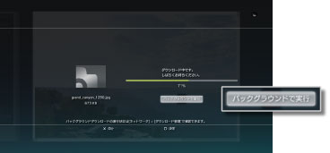
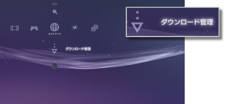

ネットワーク > バックグラウンドダウンロードをする
バックグラウンドダウンロードをする
バックグラウンドダウンロードとは、ファイルサイズの大きいデータや複数のデータをダウンロードするときに、ダウンロードしながら他の操作ができる機能です。ダウンロード中に表示される画面で、［バックグラウンドで実行］が表示されたときだけ操作できます。

ヒント
- ダウンロードするデータの種類や数によっては、バックグラウンドダウンロードができない場合があります。
- ゲームや動画ファイルなど、ダウンロードしたデータを使うときにインストールが必要な場合があります。 インストールが必要なデータは、ダウンロードが終わると、各カテゴリーに
 や
や で表示されます。
で表示されます。 - インストールしていないデータがハードディスク上に残っているときは、バックグラウンドダウンロードができない場合があります。
- バックグラウンドダウンロード中にPS3™の電源を切ると、ダウンロードの状況が保存されます。次にPS3™の電源を入れてインターネットに接続したときに、自動的にダウンロードを再開します。
- 次の操作をしている間は、バックグラウンドダウンロードが一時停止します。操作が終わると、自動的にダウンロードを再開します。
- - Blu-ray DiscやDVDを再生しているとき
- - オンライン対応ゲームのネットワーク機能を使っているとき*
- - PlayStation®2規格ソフトウェアを起動しているとき
- -
 （Folding@home™）を起動しているとき
（Folding@home™）を起動しているとき - - AVチャットをしているとき
- - システムアップデートをしているとき
- - その他、
 （設定）で設定項目を操作しているときなど
（設定）で設定項目を操作しているときなど
*
ゲームを終了するまでの間、バックグラウンドダウンロードが一時停止します。
重要
- PS3™では、一部のPlayStation®2およびPlayStation®規格ソフトウェアが、従来のPlayStation®2およびPlayStation®と異なる動作をする場合や、適切に動作しない場合があります。
- また、一部のPS3™では、PlayStation®2規格ソフトウェアの再生に対応していません。詳しくは［再生できるディスクの種類について］、各地域のWebサイト、または製品同梱の取扱説明書をご覧ください。
ダウンロード管理
バックグラウンドダウンロードをしているときだけ表示されます。 （インターネットブラウザー）や
（インターネットブラウザー）や （PlayStation®Store）からバックグラウンドダウンロードをしているデータのダウンロード状況を確認したり、ダウンロードを中止したりできます。
（PlayStation®Store）からバックグラウンドダウンロードをしているデータのダウンロード状況を確認したり、ダウンロードを中止したりできます。 （ネットワーク）から
（ネットワーク）から （ダウンロード管理）を選びます。
（ダウンロード管理）を選びます。

ダウンロード状況を確認する
ダウンロード状況を確認したいデータのアイコンを選んで ボタンを押し、オプションメニューで［進行状況］を選びます。
ボタンを押し、オプションメニューで［進行状況］を選びます。
ダウンロードを中止する
ダウンロードを中止したいデータのアイコンを選んでボタンを押し、オプションメニューで［中止］を選びます。ダウンロードを中止すると、（ダウンロード管理）から削除されます。
ダウンロードを一時停止／再開する
ダウンロードを一時停止したいデータのアイコンを選んでボタンを押し、オプションメニューで［一時停止］を選びます。ダウンロードを再開するときは、もう1度アイコンを選んでボタンを押し、オプションメニューで［再開］を選びます。
ヒント
- 一時停止すると、アイコンに
 が表示されます。
が表示されます。 - 複数のデータをダウンロードしているときに一時停止すると、自動的に次のデータのダウンロードが開始されます。
すべてのダウンロードを一時停止する
任意のアイコンを選んでボタンを押し、オプションメニューで［すべて一時停止］を選びます。
すべてのダウンロードを再開する
任意のアイコンを選んでボタンを押し、オプションメニューで［すべて再開］を選びます。